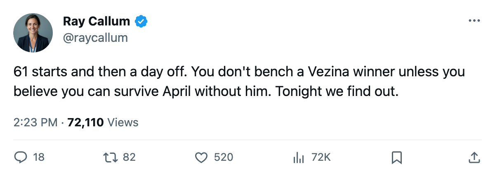

Roster Move Roundup: Washington trades 2 for 3 and sits Kolzig after 61 starts
The Capitals' workload problem met its answer in the same window as a confirmed division trade
 Ray CallumSenior correspondent · Home Ice Network
Ray CallumSenior correspondent · Home Ice Network
 Washington Capitals sent two forwards to
Washington Capitals sent two forwards to  Tampa Bay Lightning for three defensemen on February 26, the league filed.
Tampa Bay Lightning for three defensemen on February 26, the league filed.
 Olaf Kolzig87 sat. He had started 61 of 65 games, a 94% share that was the heaviest in the league. Josh Harding74, who has appeared in 4 games this season, is listed at G1 tonight against
Olaf Kolzig87 sat. He had started 61 of 65 games, a 94% share that was the heaviest in the league. Josh Harding74, who has appeared in 4 games this season, is listed at G1 tonight against  Carolina Hurricanes.
Carolina Hurricanes.
The trade adds three bodies to a Washington club carrying 36 injury spells and 225 days lost to them this season. Tampa Bay picks up two forwards while thinning the blue line.
Washington sits 4th at 81 points, 5 behind Tampa Bay, with 17 games left.
The fifth meeting of a tied series
Tonight is the fifth time Washington Capitals and Carolina Hurricanes meet this season. The series is tied 2-2-0, with Washington holding a 10-9 goal edge. Carolina arrives on a 1-game win streak after beating Toronto 2-1 on March 1.
Washington's lineup carries 15 changes from the last game. Simon Gamache61 enters at center on the fourth line. Jason Marshall61 joins the left wing.  Karel Pilar69 fills a blue line slot.
Karel Pilar69 fills a blue line slot.  Kip Miller70 carries power-play duties and the third-line center position.
Kip Miller70 carries power-play duties and the third-line center position.
On Tampa Bay's side,  Nikolai Khabibulin92 returned to the crease after Scott Clemmensen77 stepped down.
Nikolai Khabibulin92 returned to the crease after Scott Clemmensen77 stepped down.  Nolan Pratt73 came in on defense and
Nolan Pratt73 came in on defense and  Randy Robitaille74 at the third-line center spot.
Randy Robitaille74 at the third-line center spot.
The trade deadline is March 19, 17 days out.
